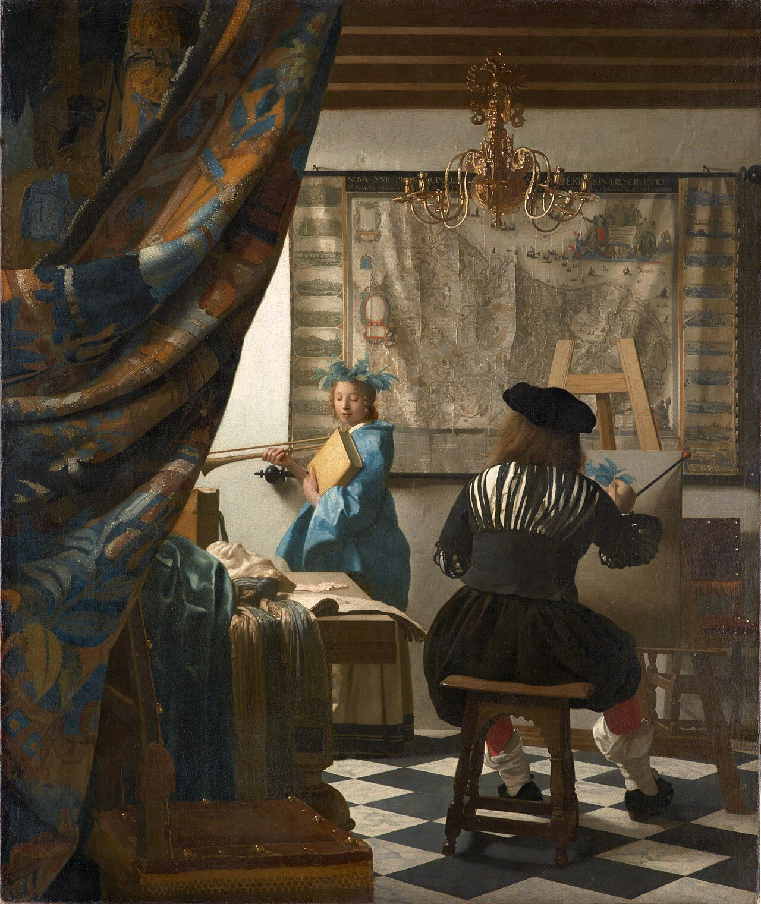
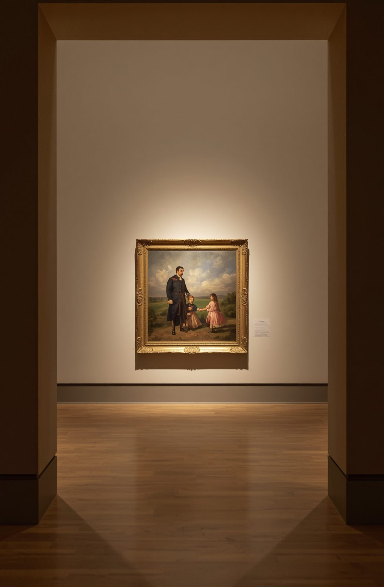

42,500
작품 특징 벡터
6,299
RAG 문서
13
미술 사조
128
벡터 차원
담당 기능
분위기 기반 추천 (ML)
감성 키워드를 미술 사조에 매핑하고, 사조별 벡터 centroid를 query로 코사인 유사도 Top-K 검색. 별도의 자연어 임베딩 학습 없이 추천 근거를 제시할 수 있음
이미지 유사도 검색 (DL)
CLIP ViT-B/32로 업로드 이미지를 임베딩해 ChromaDB에서 시각적으로 가까운 작품을 조회. 기존 분류 모델을 '특징 추출기'로 재활용
텍스트 RAG
국립현대미술관·서울시립미술관 소장품 메타데이터를 다국어 임베딩으로 인덱싱해 해설의 근거로 사용
LLM 큐레이션
Ollama Gemma가 RAG 근거 + 이미지 후보 + 외부 검색을 종합해 한국어 해설 생성. "근거가 부족하면 확인 불가라고 답하라"는 프롬프트로 근거 없는 답변을 줄이도록 구성
장애 대응 설계
인덱스 없으면 실행 안내 표시, LLM 실패 시 규칙 기반 fallback, 외부 검색은 API 실패 시 HTML 파싱으로 이중화
서비스 내 위치
기존 분류 모델을 특징 추출기로 재활용하고, 검색 결과를 ML 추천과 LLM 해설에 연결했습니다. 한 사용자 흐름 안에서 ML·DL·LLM을 함께 사용합니다.
수치
ML + DL + LLM 통합 파이프라인
이미지 / 키워드
사용자 입력
CLIP · centroid
임베딩 · 대표 벡터
ChromaDB
유사도 Top-K
텍스트 RAG
소장품 근거 검색
Gemma
한국어 도슨트 해설
구축한 벡터 인덱스
사용 기술
PythonCLIP ViT-B/32ChromaDBSentenceTransformerOllama · GemmaRAGStreamlitDuckDuckGo API
구현 화면

